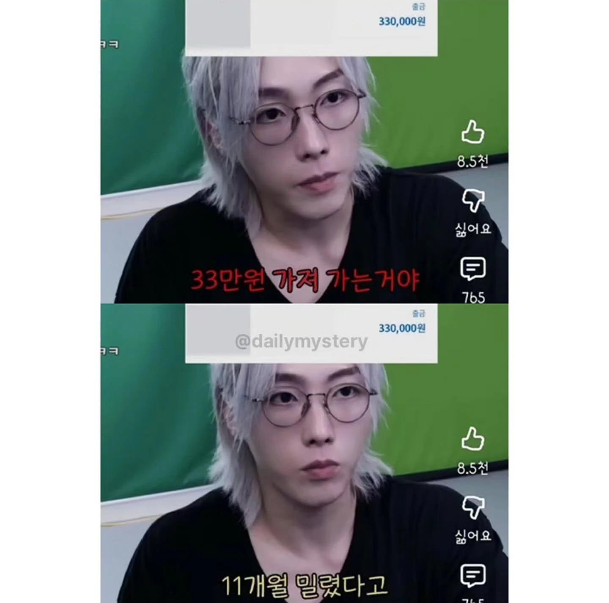
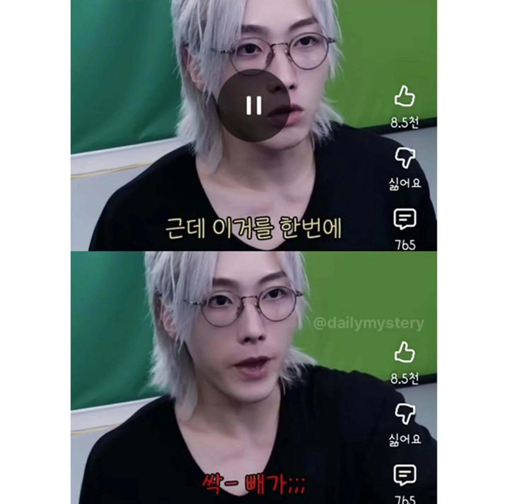
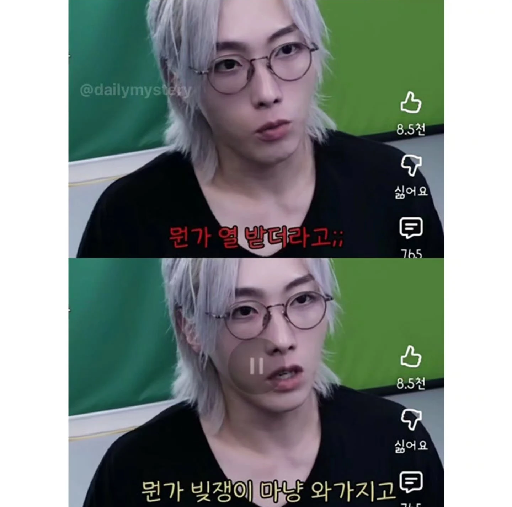

나는 예전에 모 단체에 2~3년 정도 매월 3만원정도 기부했는데 .. 어느날 안내 팜플렛에
성전건립했다고 자랑하는 편지가와서 기부 중단했다. 서울시내에 그런 교회를 지으려면
백억이상은 들었을거 같은데 어려운 이웃 도우라고 낸 기부금으로 자기네 건물 올린다니깐
기분이 조금 그랬음 ...
돈 없어서 못 빼간 정기 기부금은 그냥 그 달은 기부의사 없음으로 처리하고 계좌에 돈 들어온 달부터 그 달 것만 가져가야지
물론 나도 윗 댓글들에 동감하비만, 기부라는게 결국 사람 심리를 자극해서 유도하는 건데 tv 광고는 어떻게 하면 사람들의 마음을 움직일지 치밀하게 설계하면서 저런 행정 처리에서의 디테일은 굉장히 투박한 듯
레전드네 ㅋㅋ
어쩔 수 없는 거 같네
뭐 어쩌겠어
기분 나쁠 수 있는 상황인데 시스템 문제면 걍 잔액 없을 때 누적 안 되게 시스템을 짜면 되는 건데(별로 어렵지도 않음) 쿨찐댓글 왜케많음?
자동이체라 어쩔수 없다지만 전달 안낸 기부금 금액이
다을달로 누적되는 시스템은 좀 그렇긴하네
이월 되는 게 좀 그런 건 맞잖아
넷플이나 네멤 결제 안 되었다고 계속 아묻따 누적됨?
걍 바로 끊어버리는 거 보면 설정할 수 있는 거 아님?
넷플 네멤은 내가 받는 서비스라도 있는데
기부는 그런 것도 아니잖음
그냥 말 그대로 그 쪽 도움 되라고 한 건데
이게 이월되면 기분이 좀 뭐같긴 하잖아
이런 거 하나 세밀하게 설정 안 해두는데
내 돈을 정말 잘 관리할까 싶은 생각이 드네
솔직히 기분드럽긴할듯
그럴거면 신용점수도 깎지 왜
ㅈ같긴해
일단 돈이 안들어오면 기부 받는 쪽에서 먼저 연락을 해서 기부 의사가 없는지 물어봐야 하는거 아닌가??
다들 제대로 봐
후원과 구독은 같은 방식의 은행 결제 시스템을 이용하고 있을 따름이야
그로 인해 얻는게 ‘후원했음’과 ‘제공 서비스’일 뿐
후원이 싫고 구독이 싫으면 구독,후원 중지를 요청하면 됨
그게 은행 시스템이고
후원의 본질을 시스템에 따지지 말라고
물론 그냥 시스템대로 처리된거니까 문제없는건 맞지만
돈이 빠져나가는걸 보면서 저런 기부 시스템에 대해 회의감이 들었다는거지 ㅋㅋ